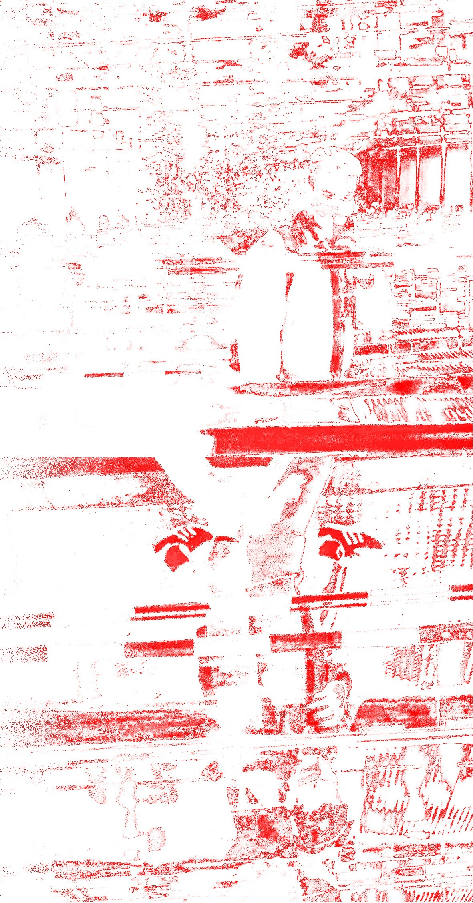
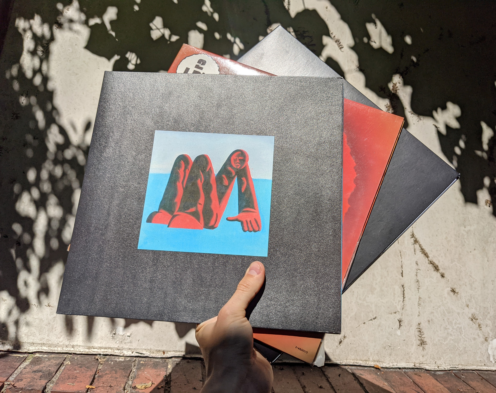

The Sundial
The sundial is a tangible VR installation in which one explores a mythical desert environment. With a narrative based on a poem I wrote, the user is confronted with the external, internal and eternal forces in life, manifestations of which were created through an AI’s interpretation of the key three stanzas.
Hissing winds, rumbling of the emerging creatures and sand between fingers and toes allow for an immersive experience that blurs the borders between real and dream worlds. The scene’s naturalistic look and feel is contrasted by the surreality of the sundial, the centerpiece of the installation. Touching it allows you to control the position of the sun, in line with the reversal of the power structure in the poem, where the commanding sun ends up in the hands of the protagonist.


FABIGAN: Becoming Me
FABIGAN is an exploration of my childhood that, using the technology of today, allows for a glance into the world to come. The helmet displays an amalgamation of my past selves from child to young adult. As such it might be a more accurate representation of myself than my true face. This immediate juxtaposition of the virtual past and the futuristic present raises questions about the impending changes to digital avatars, irreversibility of aging and the role of the human body in our society.
The work was created with a generative adversarial network, in which the faces of nonexistent people were transformed into mine through transfer learning. The resulting interpolation regained life in the form of a wearable headpiece. Code accessing accelerometer data allows the wearer to step back in time and by that take a literal walk in the networks latent space.


Default Cube
Current digital spaces make limited use of our bodies and hinder the collaborative processes that are essential for creating. Video calls reduce our rapid flow of thoughts to a delayed, compressed audio stream. Interfaces like “the desktop” merely imitate the three dimensional world we orient ourselves in and hours of work vanish with the close of a laptop lid.
The “Default” Cube is an intrinsically collaborative anti-tool Pam and I developed. It transforms the miniscule movement required to move a heavy object in the virtual space into an dynamically emerging choreography of rope pulling. By translating movement through various programs and programming languages it emphasizes the distance between human interaction and digital operations. Furthermore, the elevation of the planar rope pulling to the third dimension happens through the volume of audio in the space, a digitally quantified measure of human communication. Finally, the object being moved around is Blender’s gray “Default Cube”. Having become a symbol of digital content creation, the participants are shaking up the “defaults” in the design of the virtual world which we have come to accept.

Stanzas and Paragraphs
In my writing I focused on developing my concise style and expanding my vocabulary. Poetic processes were often guided by constraints like the use of stylistic devices.
For the visualizations of my pieces I chose to work with text to image neural networks as their style works well with themes of dreams and metamorphosis.

Alive Albums
Vinyl records are experiencing a resurgence in popularity and the experience of holding a record in your hands explains why. An analog artifact of your favorite music, wrapped in a graphic that is large enough to let your eyes wander.
Still, technology evolves and on demand streaming proposes a near unbeatable offer: All of your favorite albums, playing at a single tap, accompanied by short loops of captivating digital art.
Alive albums is an application that showcases a way to get the best of both worlds. Holding up your phone to the record triggers an augmented reality loop that brings classic albums to new life or enhances the modern collectors item by a new dimension. The detection can also be linked to start streaming the album, making vinyl accessible to people without a record player or those who want to conveniently play via bluetooth.
